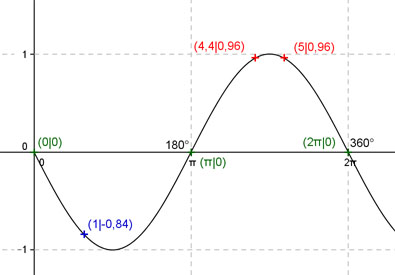
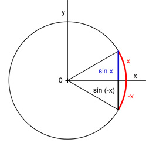

Aufgabe 134
Ergänzen Sie die Wertetabelle für x
zwischen 0 und 2π.
y = sin(-x)
x 1 4,4 oder 5
y -0,84 0,96
Amplitude = 1; Periode = 2π
Berechnung der Nullstellen:

sin (-x) = 0 --> Wegen sin(-x) = -sin x,
Spiegelung an der x-Achse, (siehe Einheitskreis)
Einheitskreis, Radius = 1:

--> x1 = 0 oder x2 = π oder x3 = 2π wie bei sin x.
N1 liegt bei 0 oder 0°, N2 bei π oder 180°,
N3 liegt bei 2π oder 360°.
Funktionswert an einer Stelle x ermitteln:
x = 1
f(1) = sin -1 = sin -57,3° = -0,84 gerundet.
Berechnung der x-Werte für y = f(x) = 0,96:
f(x) = 0,96 eingesetzt, existiert zweimal zwischen
π und 2π bzw. 180° und 360° (siehe Graph).
sin (-x) = 0,96 --> -x = arc sin 0,96 = 1,287 -->
x = -1,287 oder α = -73,7° gerundet, liegen nicht
zwischen 0 und 2π -->
Mit sin (-1,287) = sin(π + 1,287) = sin (2π - 1,287),
(siehe Einheitskreis), folgt x1 = 4,4 gerundet
oder x2 = 5 gerundet und α1 = 253,7° oder α2 = 286,3°.
Einheitskreis, Radius = 1: